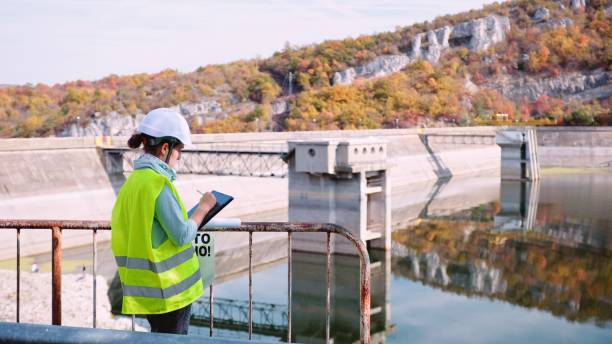

French is spoken by so many people worldwide. After English most people understand French so I dont want to be
left behind I want to learn it also. Me knowing French can open doors for me in diverse industries and regions.
In countries which are developed like Asia, and Europe.
Water Management

i love water management, because it helped me enhance my skills in various areas such as leadership,
decision-making, problem-solving, and communication, which can be incredibly fulfilling.
Ecology

i love ecology because helped me understand the intricate relationships between organisms and their
environments, studying ecology can be incredibly fulfilling. i want to bring solutions in issues such as
climate change, biodiversity loss, and habitat destruction.
Geography
i love geography because it is more about diversity of landscapes, climates, cultures, and ecosystems
across
the globe. it open career opportunities such as urban planning, GIS analysis, environmental consulting,
international development, and education.